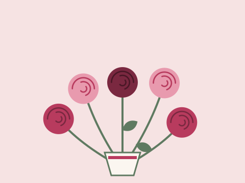

Bouquet du marché
Renoncules, marguerites et brins de lavande, au gré des arrivages.
35€
Artisan fleuriste à Blois depuis 1998
Bouquets du marché, roses anciennes et compositions champêtres : chaque semaine, Madame Roussel choisit les plus belles fleurs des producteurs de la région.

Trois compositions renouvelées chaque lundi, en taille moyenne. Livraison possible le jour même à Blois.
Renoncules, marguerites et brins de lavande, au gré des arrivages.
35€

Roses parfumées d'un rosiériste de Touraine, en camaïeu de framboise.
45€

Fleurs des champs, lavande et feuillages, comme une promenade en bord de Loire.
39€

Achetées chez des producteurs du Loir-et-Cher et de Touraine.

Livrées le jour même

Chaque bouquet est unique et emballé dans du papier recyclé.